Note
Hello, welcome to the SunFounder Raspberry Pi & Arduino & ESP32 Enthusiasts Community on Facebook! Dive deeper into Raspberry Pi, Arduino, and ESP32 with fellow enthusiasts.
Why Join?
Expert Support: Solve post-sale issues and technical challenges with help from our community and team.
Learn & Share: Exchange tips and tutorials to enhance your skills.
Exclusive Previews: Get early access to new product announcements and sneak peeks.
Special Discounts: Enjoy exclusive discounts on our newest products.
Festive Promotions and Giveaways: Take part in giveaways and holiday promotions.
👉 Ready to explore and create with us? Click [here] and join today!
Lesson 11: Control Your Rover’s Camera Tilt
Give your Mars Rover a moving camera! Just like you can nod your head up and down, your rover can now tilt its camera to explore the Martian landscape from different angles.
We’ll use a special motor called a “servo” that can move to exact positions - perfect for controlling your rover’s camera tilt. Learn how to program the servo to look up at Martian mountains or down at interesting rocks!
Learning Objectives
Discover how servo work
Learn to control camera angles using simple code blocks
Create interactive projects that let you tilt the camera with touch controls
What is a Servo?
Meet the servo - your robot’s moving muscle!
Just like you can move your arm to exactly the right position, a servo motor can move to specific angles and hold them perfectly. Think of it as a smart motor that knows exactly where to stop.
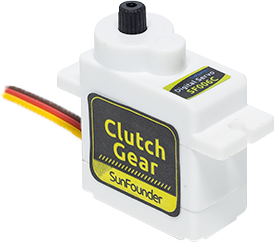
Simple Connections:
Brown wire: Ground (-)
Red wire: Power (+)
Orange wire: Signal (tells the servo where to move)
In your Mars Rover, the servo acts like a nodding head - moving the camera up and down to capture the perfect view!
How does a Servo Work?
Inside every servo, there’s a smart team working together:
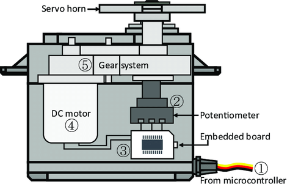
Regular Motor - Spins fast like your rover’s wheels
Gears - Slow down the motion and make it stronger
Brain Circuit - Knows exactly what position the servo is in
Position Sensor - Reports back where the servo is pointing
We control servos using special signals that say “move to this exact angle!” It’s like telling a friend exactly how far to turn their head.
Ready to make your servo dance? Let’s start programming!
Control Your Rover’s Tilt System
Let’s learn to control your Mars Rover’s tilt system - the part that moves the camera up and down like a nodding head!
Setting the Camera Angle
First, Connecting the APP to GalaxyRVR.
Check the current servo angle - you’ll see it displayed on the stage.
Drag a
set servo angle to 90 degreesblock. Click it to make your rover face forward.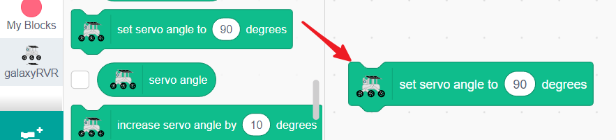
Change the value to 45 and click - now your rover looks up at the Martian sky!
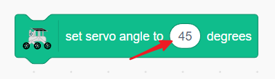
Experiment with different angles! You’ll discover your rover can tilt between 0-135 degrees.
Creating Camera Controls
Let’s build a control panel for your rover’s camera:
Create a reset button - drag a
when this sprite clickedblock.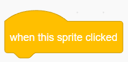
Add
set servo angle to 90 degreesto make the camera face forward again.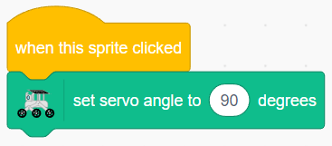
Add up/down controls - drag
when up arrow key pressedandwhen down arrow key pressedblocks.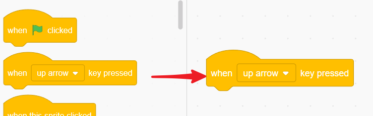
Program the up arrow to decrease the angle (look up).
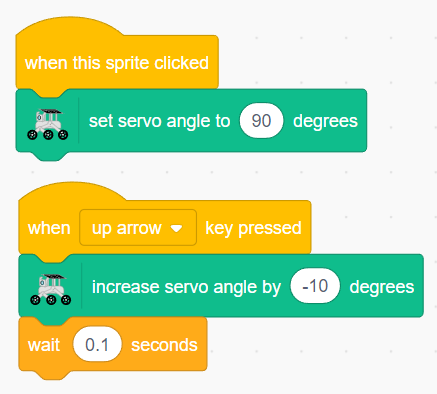
Program the down arrow to increase the angle (look down).
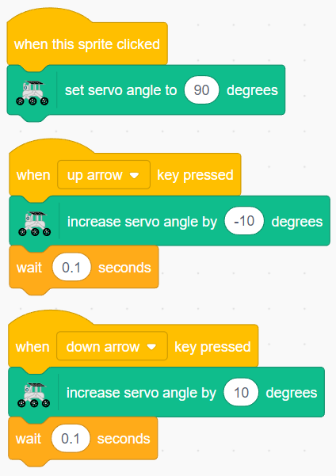
Now click the full-screen button and take control! Use the arrow keys to adjust your rover’s view, and click the sprite to reset. You’re the camera operator!
Touch Control for Camera Angle
Create a touch-controlled camera! Drag an arrow to point your rover’s camera exactly where you want it.
Clear the stage by deleting any existing sprites.

Add an Arrow sprite to use as your touch controller.
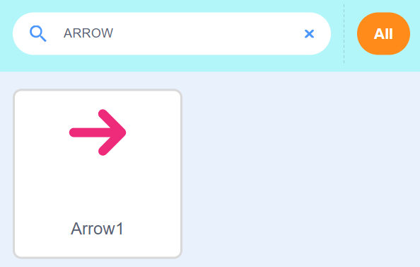
Start with
when this sprite clickedto begin touch control.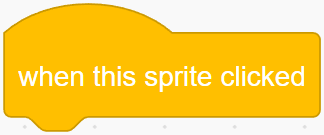
Create a loop that runs while you’re touching the arrow.
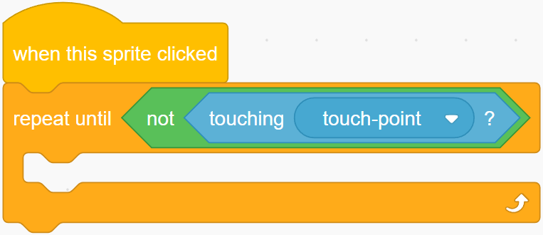
Make the arrow point toward your finger as you drag.
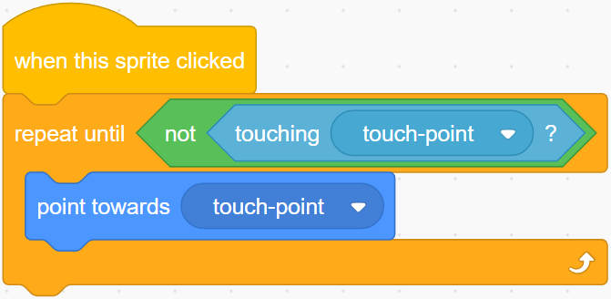
Link the arrow’s direction to the camera angle - rotate the arrow, move the camera!
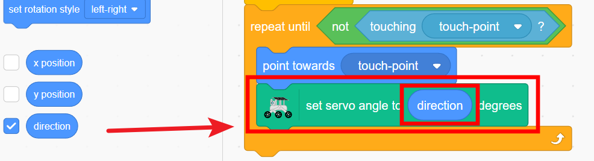
Set limits to keep the camera between 0-135 degrees.
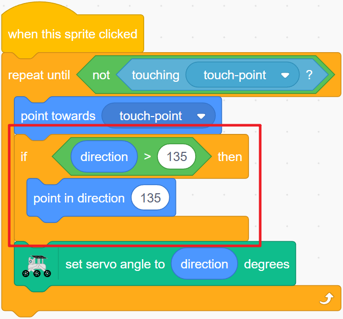
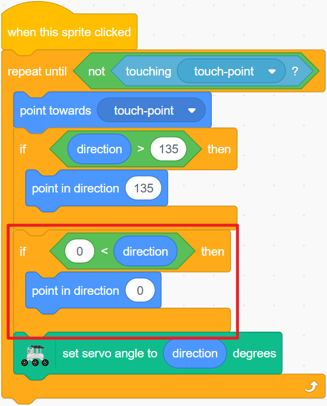
{kind=link}
{kind=link}
{kind=link}
{kind=link}
{kind=link}
{kind=link}
Touch and drag the arrow to aim your rover’s camera! Make the arrow move smoothly and respond instantly to your touch for a realistic control feel.
Servo Control Blocks
Set the servo to a specific angle (0-135 degrees)
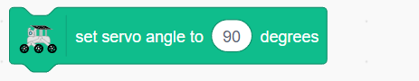
Increase or decrease the servo angle (use negative numbers to decrease)
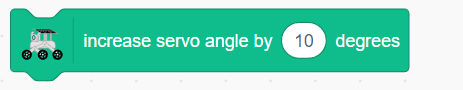
Check the current servo angle
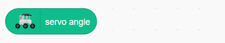